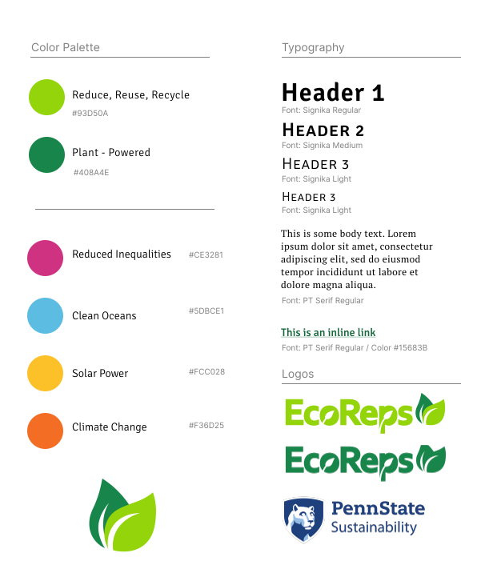

As Marketing Coordinator for Penn State EcoReps, I managed a committee and established clear brand guidelines to ensure design and visual consistency across all materials. I mentored team members on best practices for effective branding and design, helping to elevate our overall communication. I led several Instagram campaigns featuring engaging visuals that increased audience interaction. Additionally, I created promotional materials such as stickers, flyers, and infographics to support our outreach efforts. I also played a key role in growing our presence on TikTok and LinkedIn, expanding our digital engagement and community reach.
Coming into this role, I knew that Instagram had been our main form of social media outreach. My goal as the Marketing Coordinator was to take our Instagram presence to the next level by prioritizing high quality content that engaged followers, rather than producing large amounts of passive content that is easily forgotten.

The previous Marketing Coordinator expressed a desire to have a cohesive, visually appealing feed. I used my experience creating style guides to put together a document with general brand guidelines for my committee and I to follow.